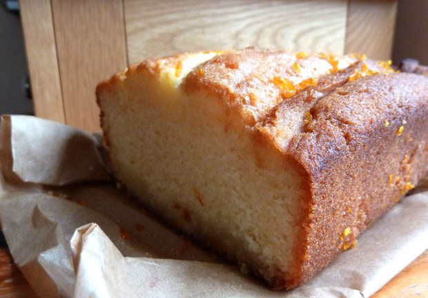

-
14 Sep 2011 Apricot frangipane tartlets -

24 Jul 2011 Cucumber cupcakes with elderflower cream -

27 Jun 2011 Summery meringues with lime curd and berries -
11 Jun 2011 Catalan cream tart -

30 May 2011 Super-stuffed cranberry cream macarons -
21 Apr 2011 Sesame Sandwich Cookies -
30 Mar 2011 Cakes for Japan -

02 Mar 2011 Turkish Delight Macarons -

22 Feb 2011 Rhubarb Mousse Cake for Valentine's Day -
 01 Feb 2011 Seville Orange Pound Cake -

15 Jan 2011 The Ghost of Christmas Cheesecake -

01 Jan 2011 Simple starts: Challah bread for New Year's Day -

02 Dec 2010 Pandan madeleines -
19 Nov 2010 Pistachio chocolate macarons -

29 Oct 2010 Buckwheat honey tarts -
12 Oct 2010 Boozy butterscotch eclairs -

17 Sep 2010 Soft and shapely chocolate biscuits -

24 Aug 2010 Giving cakes: greengage hazelnut tart -

09 Aug 2010 Raspberry matcha shortbread squares -

24 Jul 2010 Blackcurrant cream cake -
20 Jul 2010 Strawberry mirror cheesecake -

15 Jun 2010 Strawberry tartlets with basil-infused pastry cream -

07 Jun 2010 Stripey Coffee Walnut Bundt Cake -

12 May 2010 Cardamom Cranberry Cookies -
21 Apr 2010 Lemon meringue tartlets, oh my -
12 Apr 2010 Brighton Chocolate Invasion! -

03 Mar 2010 Toasted hazelnut and chocolate cake -
14 Feb 2010 Absinthe Macarons -
07 Feb 2010 White chocolate macarons -
31 Jan 2010 Nom-tastic Nanaimo bars -

23 Jan 2010 Plum spice cake -

19 Jan 2010 Cupcakes that care -
08 Jan 2010 Coconut cream cake -

31 Dec 2009 Boozy custard cups -
21 Dec 2009 Crimbo Crumble -

02 Dec 2009 Christmas Matcha cookies -

24 Aug 2009 Pistachio cardamom cake -

07 Feb 2009 Chocolate orange mousse cake